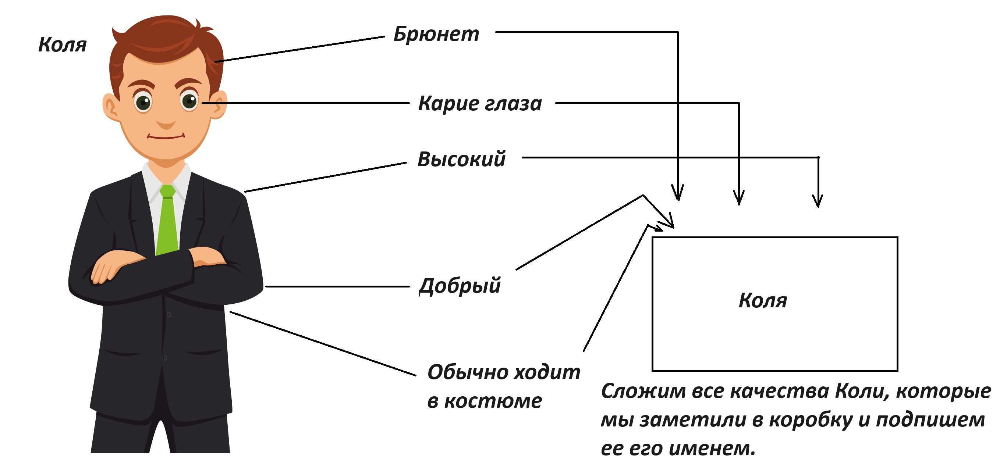
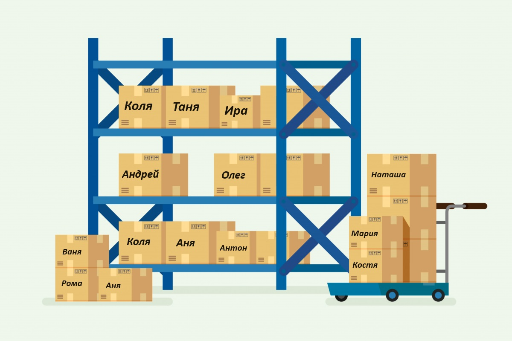
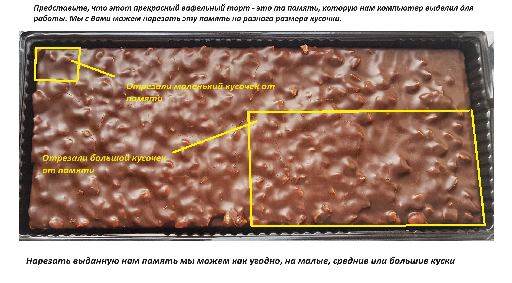
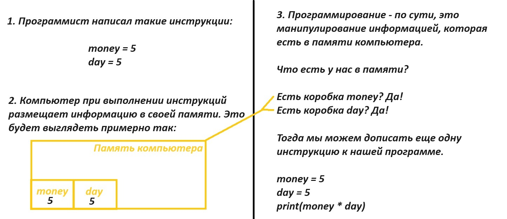

В прошлом уроке - мы поговорили с Вами о видах информации. И узнали, что существуют цифры и буквы(символы). И даже смогли научиться вписывать внутри команды print() какой именно вид информации, мы хотим попросить компьютер вывести на экран. Кратко вспомним:
Цифры - print(1) или print(7) или print(174). Цифры пишем просто так, без кавычек.
Буквы(Символы) - пишем используя одинарные или двойные скобочки print('hello world') или print("мяу") или print('111').
*Последний пример print('111') - указывает на то, что мы хотим вывести на экран числа, как обычную символьную информацию, нам тут не нужна особенность цифр заключающаяся в сложении, делении, вычитании или умножении. Здесь мы просто используем цифры как символы информации, например - print('Моя квартира №111').
Фух. Кратко по прошлому уроку пробежались! Однако внутри команды print(), а точнее в скобочках этой команды(заклинания), довольно часто можно еще увидеть что-то такое - print(x). И тут мы должны, казалось бы, совершенно запутаться.
*print(x) - это число? Нет!
*print(x) - это буква(символ)? Нет! Потому - что нет кавычек!
Буквы должны быть в кавычках, тут их нет. И при этом х на число не похож. Что это тогда такое? Давайте разбираться! Представим, сегодня себя - Шерлоком Холмсом. И будем искать ответ постепенно.
Если запустить на нашем сайте python-online команду print(x). Мы увидим ошибку.
Ошибка такая - "NameError: name 'x' is not defined" (перевод - "имя 'x' не определено")
Давайте более подробно разберем, то что произошло. Мы написали инструкцию(программу) и при нажатии кнопочки run попросили нашего переводчика, перевести эту инструкцию на язык компьютера. И получили ошибку, что некое имя где-то не определено.
О каком имени - идет речь? Для того, что бы, ответить на этот вопрос - нам нужно, сначала, поговорить о человеческой памяти. Уверен, что каждый из Вас помнит хотя-бы несколько имен знакомых Вам людей.
Значит Ваш мозг записал эти имена в память, чтобы ими можно было легко пользоваться при необходимости. Скорее всего наш мозг построил модель нашего друга/знакомого и запомнил эту модель по имени.
Примерно так: У Вас есть высокий, кареглазый, добрый и смешной друг по имени Коля. Ваш мозг - сначала, сохранит в голове модель Коли (запомнит его внешность, рост, цвет глаз, качества характера) и сохранит эту модель под именем Коля.

Для наглядности, можем зарисовать этот процесс. Именно так, наш мозг, хранит информацию о наших знакомых и друзьях. Людей, которые нас окружают, иногда довольно много и мы можем представить, как там у нас внутри мозга - все хранится. Если заметите некоторые имена могут повторяться.

Именно поэтому если нас спросят - "Как дела у твоего друга Коли"?(внимательно всмотритесь на картинку)
Нам придется уточнить о каком именно Коле идет речь.
А если нас спросят - "Как дела у Аркадия"?(внимательно всмотритесь на картинку)
Мы ответим - "Я не знаю никакого Аркадия"
А теперь попробуйте, сравнить похожи ли хоть чуть-чуть эти два выражения:
*"Я не знаю никакого Аркадия"
*"name 'x' is not defined"
Отлично! Если Ваш ответ был - вы на верном пути, они и вправду, похожи. Поздравляю, мы стали чуть ближе к ответу. И путем сравнения поняли, что компьютер не нашел в своей памяти никакой коробки x.
Значит, мы уже точно кое-что можем сказать:
print(1) - цифра (вывести цифру)
print('h') - буква/cимвол (вывести букву/символ)
print(h) - коробка h (вывести содержимое коробки)
print('1') - символ числа 1 (вывести единицу, но как букву/символ)
То есть разница между коробками и буквами(символами) только в кавычках. Напишите print("h") кавычки - значат, что вы просите компьютер вывести на экран букву h. Напишите print(h) - и вы уже просите компьютер посмотреть нет ли у него в памяти коробки h.
Хорошо! Теперь мы вплотную подошли к разгадке. Если print(x) - это команда компьютеру посмотреть в своей памяти коробку с именем х. Значит пришло время поговорить, откуда там могут появляться эти самые коробки.
Для начала мы с вами все максимально упростим. И зададимся вопросом есть ли у компьютера память? И тут думаю, даже маленькие дети, вспомнят, что они могут смотреть фотки и мультики на компьютере, а компьютер их как то же хранит. Да - устройства обладают памятью. Умеют сохранять информацию копировать ее, изменять и удалять. И мы с Вами - будущие программисты, обязательно попробуем в ближайшее время все это сделать с информацией.
А сейчас нам важнее другое. Когда мы с Вами открываем сайт python-online или работаем в среде разработки. Компьютер выдает нам для работы кусок своей памяти. Этой памятью, мы можем распоряжаться как захотим. Можем вообще ее не трогать, а можем заполнять ее информацией. Работа с памятью остается уже на усмотрение самого программиста.
Мне нравится представлять, что вся память компьютера, которую он нам выдал - это большой пирог.
И мы этим большим пирогом можем пользоваться как захотим, отрежем маленький кусочек памяти или сразу большой кусок памяти или средний, а может отрезать сразу половину.

Если мы можем отрезать кусочки памяти. То конечно же мы можем и что-то сохранять в эти кусочки памяти. Принцип сохранения - до безумия простой. И выглядит вот так.
x = 7
Такая инструкция будет переводиться примерно так. Уважаемый компьютер - отрежь, пожалуйста, от своей памяти небольшой кусочек. Назови этот кусочек - x (коробка х). Сохрани в этом кусочке памяти x - цифру 7.
Если представить этот кусочек памяти x, такой же коробкой, которую, мы представляли для нашего мозга. То такой набор инструкций.
x = 1
y = 2
z = 3
d = 4
r = 5
t = 6
u = 7
k = 8
o = 9
v = 10
Будет храниться в памяти компьютера примерно так.
Итак, получается что наш компьютер тоже может хранить информацию, прямо как наш мозг. Да, компьютер не сможет создать такую же крутую модель нашего друга, как это получается у нас. Но запросто сможет сохранить имя, возраст и другие параметры в свои коробки. Значит и компьютер и мозг могут используя память, создавать коробки, в которые, можно складывать информацию.
Такие коробки - по "научно-заучному" принято называть словом переменная. Почему? Потому что - корень слова "Переменная" - мена (менять, обмениваться). То есть это что-то что может меняться. Можем ли мы положить в коробку age (возраст по-английски) возраст нашего друга Коли? Да!
age = 10
Может ли этот возраст измениться? Да! Тогда можем ли мы в туже коробку положить новое значение возраста? Да!
age = 11
Поскольку мы имеем право менять содержимое коробок. Они и называются - переменные! Те коробки - которые могут меняться - переменные. Ну и наконец, на самое сладкое. В языке программирования Python, есть правила как можно называть эти коробки.
*Имя переменной может содержать только латинские буквы, числа и символ нижнего подчеркивания;
*Имя переменной не должно содержать пробелов;
*Имя переменной не должно начинаться с цифры;
*Регистр важен: x и X это разные переменные.
С помощью переменных - можно писать, удивительно интересные программы. Давайте рассмотрим пример с использованием коробочек(переменных).

Главная идея в этом примере. Что программист, сам наполняет память компьютера (коробочки-переменные) значениями. Сначала отрезает небольшой кусочек памяти, называет его money. В памяти компьютера создается коробочка-переменная money, в которую программист кладет цифру 5. Затем программист отрезает от памяти еще кусочек, создает коробочку переменную day и кладет туда, то же число 5. Обе эти коробки-переменные
остаются в памяти компьютера и теперь можно в любое время обратиться к этим коробочкам. Если упростить до предела суть программирования, то можно с осторожностью попробовать сказать,
что программирование это манипулирование той информацией, которая попала в память к компьютеру. Для человека - это звучит очень логично. Если мы никогда не изучали химию, то вряд ли сможем создать какое-то химическое соединение.
Сначала мы должны выучить науку, запомнить ее хорошенько и только когда правила и понятия прочно будут в нашей памяти, только тогда у нас получиться что-то сделать.
Теперь мы можем обращаться к нашим коробкам внутри нашего print(). И теперь ошибки у же не будет, потому что в памяти компьютера есть коробки, которые мы просим вывести.